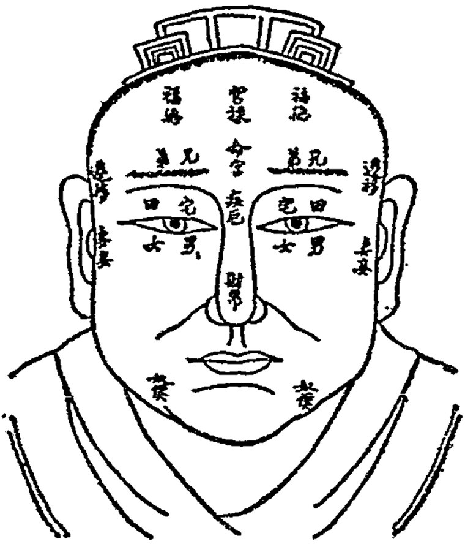

面相
面相三停、面形眼形、五官与十二宫条文对照自查，照录古籍通行本，属传统民俗文化范畴。
▾面相三停上中下三停与早中晚运
▾面形与眼形面形七类与眼形八格
▾面相五官五官官名五行五脏与所主
▾气色与痣相五色配属与痣位断语
▾面相十二宫定位主事吉凶条文对照

▾面相自查十二宫丰陷气色计分
▾面相理论流派形神两宗与典籍谱系
▾底本与凡例照录口径与三原则
| 底本 | 本页所录 | 口径 |
|---|---|---|
| 《麻衣相法》通行本 | 六府三才三停 | 正文照录，注明篇名 |
| 《神相全编》通行本 | 十二宫诀 | 正文照录，注明篇名 |
| 《柳庄相法》 | 本页未录条文，列作备参 | 未验不断 |
三原则
条文照录：古籍正文不改一字，只作句读。异文不并：各本用字互异者不混拼，另于数据注记。未验不断：古籍无载者不作条文，只作通行归纳并明标口径，不作应验承诺。
相术为传统民俗文化，仅供文化研究与娱乐，不作人格评判与医疗依据。